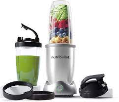
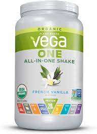
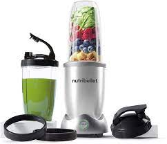
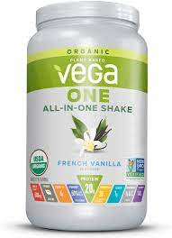
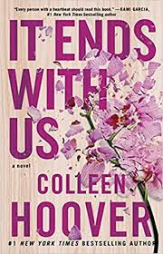
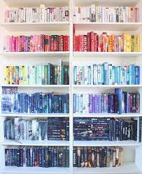
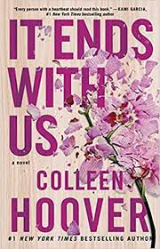
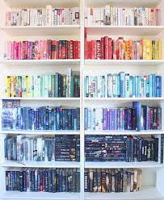

My Lifestyle
Habbits and Health
Mantaing a healthy lifestyle is a big priority of mine. Nutition, exercise, and mental health are a huge part of how I live my life. I have found a lot of joy in getting into nutrition. When I eat healthy, I find that I feel better over all. But it can be hard to mantain healthy living especially when you are socializing with friends. When I am frequently out to dinner, I always try to order something healthy. I also start my day every day with a green smoothie. I add vega protein to stay energized and full.

 



Mental Health
Reading is a great outlet, especially when I am mentally overwhelmed. Over the summer I got really into reading. I find that it relaxes me, and it improves my mental health. My favorite author is Colleen Hoover. My favorite work from her is "It Ends With Us", "Ugly Love", and "Verity". I am always looking for new book reccomdations.
 


